Binary outcomes: a disconnected smoking-cessation network
Source:vignettes/binary-outcomes.Rmd
binary-outcomes.RmdThis vignette is a complete worked example for a
binary endpoint in the situation cpaic exists for: a
treatment network that is disconnected and
whose trials enrolled different populations. We
reconnect it through shared treatment components and adjust it for
effect-modifier imbalance at the same time, along two routes: the
frequentist two-stage route (cstc() / cmaic()
feeding cnma_bridge()) and the one-stage Bayesian route
(cmlnmr()).
For the general framework see vignette("cpaic-methods");
for the population-specific hierarchies that follow from it see
vignette("cpaic-disconnected-myeloma"); for a count
endpoint with an exposure offset see
vignette("count-outcomes").
The data here are entirely simulated. The clinical setting (smoking cessation) supplies only the vocabulary, because cessation packages are genuinely multi-component: behavioral support and pharmacotherapy are combined. No number below is taken from any trial or publication. We set the true parameter values ourselves, which is exactly what lets us check whether each method recovers them.
The clinical question
Write UC for usual care (brief advice; the inactive
comparator) and use four active components:
-
NRT: nicotine replacement therapy, -
CBT: intensive behavioral counseling, -
VAR: varenicline, -
BUP: bupropion.
The outcome is sustained abstinence at six months (a binary success), so a log odds ratio above zero favors the active arm.
The trials split into two groups that share no treatment:
-
Sub-network 1, older trials against usual care:
UCvsNRT(once), andUCvsCBT(three times). -
Sub-network 2, newer trials that give everyone
counseling and randomize the drug on top:
CBT+NRTvsCBT+VAR(twice), andCBT+NRTvsCBT+BUP(once).
No trial links the two groups. A guideline panel nevertheless has to
ask: how does counseling plus varenicline (CBT+VAR)
compare with nicotine replacement alone (NRT)?
That contrast crosses the gap, and no randomized comparison of any kind
speaks to it.
The two groups also enrolled different smokers. The newer combination
trials recruited heavier smokers. We use baseline
cigarettes per day as the effect modifier, coded
cpd = (cigarettes per day - 15) / 10, so
cpd = 0 is a 15-a-day smoker and cpd = 1 is a
25-a-day smoker. Heavier smokers are harder to treat (a prognostic
effect) and respond differently to the components (an
effect-modifying one).
The model
cmlnmr() fits an individual-level logistic regression to
every patient, whether that patient’s data arrive as IPD or are
integrated out of an aggregate arm:
where
indexes the study,
the treatment,
is a study intercept,
collects the prognostic effects, and
is the row of the treatment-by-component matrix
that says which components treatment
contains. The component main effects are
and the component by effect-modifier interactions are
.
Two consequences follow immediately, and they organize the whole vignette.
1. The relative effect is population-specific. The
log odds ratio of treatment
against treatment
in a population with effect-modifier value
is
There is no population-free
relative effect once
.
Asking for one is asking a question that has no answer, so
relative_effects() requires a newdata argument
naming the target population. Note also that
on its own is the effect at the covariate origin: here, at a
smoker who smokes 15 a day. It is not a population-adjusted quantity and
should not be reported as one.
2. Sub-networks that share components share
parameters. CBT+VAR and NRT have no
trial between them, but CBT+VAR contains CBT,
which the old trials measured, and the newer trials measure
VAR against NRT on a common counseling
backbone. The additive structure turns those shared components into
shared parameters, which reconnects the network by construction, while
the aggregate arms are fitted by integrating the individual model over
each study’s own covariate distribution (Phillippo et
al. 2020).
Non-collapsibility, and why it matters here
The odds ratio is non-collapsible (Greenland et al. 1999). The population-average (marginal) log odds ratio is not the average of the individual (conditional) log odds ratios: it is pulled toward the null whenever a prognostic covariate is left out of the model, even when there is no effect modification at all. That is a property of the logit link, not a bias.
So “the log odds ratio in population ” is ambiguous until you say whether you mean the conditional or the marginal one, and the methods answer differently (Remiro-Azócar et al. 2022):
| method | estimand |
|---|---|
cstc() |
conditional log OR at the target’s covariate values |
cmaic() |
marginal log OR in the target population |
cmlnmr(),
i.e.
|
conditional log OR at |
All three can be simultaneously correct and still disagree. We will see them disagree, and we will measure the disagreement against the truth we planted.
Setting up the data
We set the truth ourselves. beta_true are the component
log odds ratios at cpd = 0 and gamma_true are
their interactions with cpd: varenicline holds up in heavy
smokers, whereas nicotine replacement and counseling lose ground.
treatments <- c("UC", "NRT", "CBT", "CBT+NRT", "CBT+VAR", "CBT+BUP")
Cmat <- build_C_matrix(treatments, inactive = "UC")
Cmat
#> BUP CBT NRT VAR
#> UC 0 0 0 0
#> NRT 0 0 1 0
#> CBT 0 1 0 0
#> CBT+NRT 0 1 1 0
#> CBT+VAR 0 1 0 1
#> CBT+BUP 1 1 0 0
beta_true <- c(BUP = 0.45, CBT = 0.55, NRT = 0.50, VAR = 0.95) # at cpd = 0
gamma_true <- c(BUP = 0.05, CBT = -0.20, NRT = -0.40, VAR = 0.35) # x cpd
b_prog <- -0.35 # heavier smokers quit less often, whatever the arm
# theta_t(x) = C_t' (beta + Gamma x): the TRUE conditional log-OR vs UC.
theta <- function(trt, x) {
ct <- Cmat[trt, ]
comps <- names(ct)
sum(ct * beta_true[comps]) + sum(ct * gamma_true[comps]) * x
}The headline contrast is therefore, exactly, which runs from an odds ratio of 2.18 in a 10-a-day population to 4.71 in a 25-a-day one. One number cannot serve both.
Seven trials. Two of them are ours, so we hold IPD; the other five are published, so we hold only aggregate data. The IPD trials enrolled a real spread of smokers, because a component by effect-modifier interaction is identified from covariate variation within a trial: a trial in which everybody smokes 20 a day carries no information about how the effect varies with smoking rate, however many patients it has.
design <- data.frame(
study = c("BRIEF-1", "BRIEF-2", "BRIEF-3", "BRIEF-4",
"COMBO-1", "COMBO-2", "COMBO-3"),
arm1 = c("UC", "UC", "UC", "UC", "CBT+NRT", "CBT+NRT", "CBT+NRT"),
arm2 = c("NRT", "CBT", "CBT", "CBT", "CBT+VAR", "CBT+BUP", "CBT+VAR"),
n = c(1200, 700, 1200, 1000, 700, 1100, 1200), # per arm
mu = c(-1.9, -1.9, -1.8, -2.0, -1.9, -1.9, -1.8), # study intercept
cpd_m = c(-0.7, 0.0, 0.0, 0.2, 0.6, 0.9, 0.5), # covariate mean
cpd_s = c(0.55, 0.85, 0.60, 0.60, 0.85, 0.55, 0.60), # covariate SD
ipd = c(FALSE, TRUE, FALSE, FALSE, TRUE, FALSE, FALSE),
stringsAsFactors = FALSE
)
knitr::kable(design, caption = "Trial design. BRIEF-* are older; COMBO-* newer.")| study | arm1 | arm2 | n | mu | cpd_m | cpd_s | ipd |
|---|---|---|---|---|---|---|---|
| BRIEF-1 | UC | NRT | 1200 | -1.9 | -0.7 | 0.55 | FALSE |
| BRIEF-2 | UC | CBT | 700 | -1.9 | 0.0 | 0.85 | TRUE |
| BRIEF-3 | UC | CBT | 1200 | -1.8 | 0.0 | 0.60 | FALSE |
| BRIEF-4 | UC | CBT | 1000 | -2.0 | 0.2 | 0.60 | FALSE |
| COMBO-1 | CBT+NRT | CBT+VAR | 700 | -1.9 | 0.6 | 0.85 | TRUE |
| COMBO-2 | CBT+NRT | CBT+BUP | 1100 | -1.9 | 0.9 | 0.55 | FALSE |
| COMBO-3 | CBT+NRT | CBT+VAR | 1200 | -1.8 | 0.5 | 0.60 | FALSE |
Note which edges are aggregate-only, because it will matter a great
deal later: NRT versus UC is measured
by exactly one trial (BRIEF-1, aggregate), and bupropion by
exactly one (COMBO-2, aggregate). Counseling and
varenicline, by contrast, are each measured by an IPD trial.
gen_arm <- function(study, trt, n, mu, m, s) {
cpd <- rnorm(n, m, s)
eta <- mu + b_prog * cpd + vapply(cpd, function(x) theta(trt, x), numeric(1))
data.frame(.study = study, .trt = trt, .y = rbinom(n, 1, plogis(eta)),
cpd = cpd, stringsAsFactors = FALSE)
}
patients <- do.call(rbind, lapply(seq_len(nrow(design)), function(i) {
d <- design[i, ]
rbind(gen_arm(d$study, d$arm1, d$n, d$mu, d$cpd_m, d$cpd_s),
gen_arm(d$study, d$arm2, d$n, d$mu, d$cpd_m, d$cpd_s))
}))
is_ipd <- patients$.study %in% design$study[design$ipd]The two routes want the data in different shapes, and it is worth being explicit about that.
cmlnmr() takes patient rows plus
arm-level aggregate rows (events r, sample
size n, and each effect modifier’s _mean and
_sd), because it rebuilds the aggregate likelihood from the
individual model:
ipd <- patients[is_ipd, ]
agd <- do.call(rbind, lapply(
split(patients[!is_ipd, ], ~ .study + .trt, drop = TRUE),
function(d) data.frame(
.study = d$.study[1], .trt = d$.trt[1],
r = sum(d$.y), n = nrow(d),
cpd_mean = mean(d$cpd), cpd_sd = sd(d$cpd), stringsAsFactors = FALSE)))
agd <- agd[order(agd$.study, agd$.trt), ]
rownames(agd) <- NULL
knitr::kable(agd, digits = 3, caption = "Aggregate arms, the shape cmlnmr() wants")| .study | .trt | r | n | cpd_mean | cpd_sd |
|---|---|---|---|---|---|
| BRIEF-1 | NRT | 355 | 1200 | -0.724 | 0.535 |
| BRIEF-1 | UC | 190 | 1200 | -0.689 | 0.546 |
| BRIEF-3 | CBT | 283 | 1200 | 0.011 | 0.608 |
| BRIEF-3 | UC | 171 | 1200 | 0.024 | 0.624 |
| BRIEF-4 | CBT | 191 | 1000 | 0.192 | 0.602 |
| BRIEF-4 | UC | 127 | 1000 | 0.219 | 0.586 |
| COMBO-2 | CBT+BUP | 219 | 1100 | 0.931 | 0.559 |
| COMBO-2 | CBT+NRT | 209 | 1100 | 0.897 | 0.570 |
| COMBO-3 | CBT+NRT | 319 | 1200 | 0.515 | 0.596 |
| COMBO-3 | CBT+VAR | 501 | 1200 | 0.495 | 0.586 |
cpaic_network() takes contrast-level
aggregate data (one row per comparison: TE,
seTE), the convention of netmeta::discomb().
Every study appears, including the two IPD ones, whose
unadjusted contrasts cstc() and
cmaic() will overwrite with adjusted ones:
contrast_of <- function(d, a1, a2) {
cell <- function(a) { s <- d[d$.trt == a, ]; c(r = sum(s$.y), n = nrow(s)) }
x2 <- cell(a2); x1 <- cell(a1)
logodds <- function(v) log(v["r"] / (v["n"] - v["r"]))
data.frame(
studlab = d$.study[1], treat1 = a2, treat2 = a1,
TE = unname(logodds(x2) - logodds(x1)),
seTE = unname(sqrt(1 / x2["r"] + 1 / (x2["n"] - x2["r"]) +
1 / x1["r"] + 1 / (x1["n"] - x1["r"]))),
stringsAsFactors = FALSE)
}
agd_contr <- do.call(rbind, lapply(seq_len(nrow(design)), function(i) {
d <- design[i, ]
contrast_of(patients[patients$.study == d$study, ], d$arm1, d$arm2)
}))
knitr::kable(agd_contr, digits = 3,
caption = "Unadjusted contrasts, the shape cpaic_network() wants")| studlab | treat1 | treat2 | TE | seTE |
|---|---|---|---|---|
| BRIEF-1 | NRT | UC | 0.803 | 0.101 |
| BRIEF-2 | CBT | UC | 0.424 | 0.142 |
| BRIEF-3 | CBT | UC | 0.619 | 0.107 |
| BRIEF-4 | CBT | UC | 0.484 | 0.124 |
| COMBO-1 | CBT+VAR | CBT+NRT | 0.699 | 0.119 |
| COMBO-2 | CBT+BUP | CBT+NRT | 0.058 | 0.108 |
| COMBO-3 | CBT+VAR | CBT+NRT | 0.683 | 0.088 |
The network is disconnected, and cpaic_connectivity()
says so, along with the components that could bridge it:
net <- cpaic_network(agd_contr, ipd = ipd, sm = "OR", family = "binomial",
inactive = "UC", ipd_covariates = "cpd")
cpaic_connectivity(net)
#> cpaic connectivity
#> Connected network: FALSE
#> Sub-networks: 2
#> [1] 3 treatments
#> [2] 3 treatments
#> Bridging components: CBT, NRT
#> Component design: rank(X) = 4 / 4 components -> all component effects identified
#> Estimable effects: 5 / 5 vs UCplot() draws the same verdict. Each sub-network is laid
out on its own circle, so a disconnected network looks disconnected;
edges are colored by whether the comparison carries any individual
patient data, and their width is the number of studies contributing to
it.
# the panel is widened so that the outer treatment labels are not clipped
plot(net)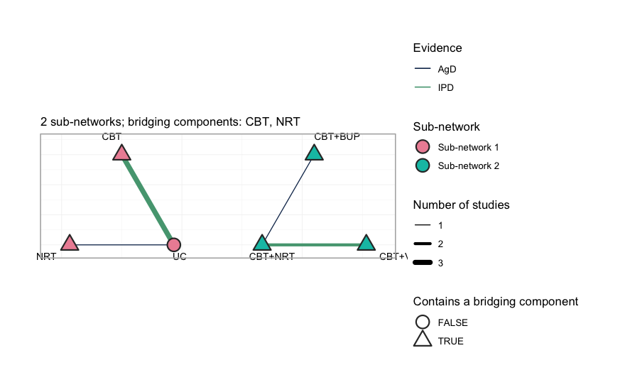
plot of chunk network-plot
Three things to read off it. First, the two groups sit side by side
with no edge between them: no comparator, direct or
indirect, joins UC, NRT and CBT
to CBT+NRT, CBT+VAR and CBT+BUP.
Second, every treatment except UC is drawn as a triangle,
meaning it contains one of the two bridging components, CBT
or NRT; it is through those shared components, and not
through any comparator, that the additive model will carry information
across the gap. Third, only two comparisons are green, the color
reserved for a comparison on which at least one study holds individual
patient data: UC versus CBT, which three
studies inform but only BRIEF-2 informs with patient
records, and CBT+NRT versus CBT+VAR, where
COMBO-1 does the same. Every adjustment the
frequentist route can perform happens on those two edges. The
remaining five edges enter the analysis exactly as their publications
reported them.
The component design matrix nevertheless has full column rank. Hold that thought. Full rank means every component effect is identified as an aggregate-data component NMA would define it (Wigle et al. 2026). It does not mean every population-adjusted effect is identified, and the difference turns out to be the whole story.
Covariate balance
Population adjustment exists because the trial populations differ. They do:
balance <- do.call(rbind, lapply(split(patients, patients$.study), function(d)
data.frame(Study = d$.study[1],
Cigarettes_per_day = 15 + 10 * mean(d$cpd),
cpd_mean = mean(d$cpd), cpd_sd = sd(d$cpd),
Quit_rate = mean(d$.y))))
knitr::kable(balance, digits = 2, row.names = FALSE,
caption = "Effect-modifier balance across the five trials")| Study | Cigarettes_per_day | cpd_mean | cpd_sd | Quit_rate |
|---|---|---|---|---|
| BRIEF-1 | 7.94 | -0.71 | 0.54 | 0.23 |
| BRIEF-2 | 15.06 | 0.01 | 0.85 | 0.18 |
| BRIEF-3 | 15.17 | 0.02 | 0.62 | 0.19 |
| BRIEF-4 | 17.05 | 0.21 | 0.59 | 0.16 |
| COMBO-1 | 20.92 | 0.59 | 0.85 | 0.30 |
| COMBO-2 | 24.14 | 0.91 | 0.56 | 0.19 |
| COMBO-3 | 20.05 | 0.51 | 0.59 | 0.34 |
BRIEF-1 recruited 8-a-day smokers; COMBO-2
recruited 24-a-day smokers. A comparison that ignores this is comparing
the wrong people.
We must therefore name a target population. Take the
caseload a stop-smoking service actually sees: a mean of 18 cigarettes a
day, i.e. cpd = 0.3. We will also ask for a lighter-smoking
population, cpd = -0.4 (11 a day), to show that the answer
moves.
target <- data.frame(cpd = 0.3) # 18 cigarettes/day: the decision population
target_light <- data.frame(cpd = -0.4) # 11 cigarettes/dayFitting
Route 1: two stages, frequentist
cstc() fits, in each IPD study, an outcome regression
with treatment main effects, prognostic main effects, and
treatment-by-effect-modifier interactions, with the effect modifiers
centered at the target. The treatment coefficient is
then the anchored, population-adjusted contrast in the target
population. cmaic() instead reweights each IPD study so its
effect-modifier distribution matches the target (Signorovitch et al.
2010) and refits. Both then hand their adjusted contrasts to
cnma_bridge(), which combines everything through the
additive component model (Rücker et al. 2020).
fit_stc <- cstc(net, target = c(cpd = 0.3), effect_modifiers = "cpd")
fit_maic <- cmaic(net, target = c(cpd = 0.3), target_sd = c(cpd = 0.7),
effect_modifiers = "cpd", n_boot = 200, seed = 7)
effective_sample_size(fit_maic)
#> BRIEF-2 COMBO-1
#> 1212.364 1208.169Matching costs information. The effective sample sizes above are what
is left of each IPD trial after reweighting; COMBO-1, which
is furthest from the target, pays the most. (We pass
target_sd as well as the mean so that MAIC matches the
target’s variance too, not only its center.)
forest() displays the bridged result. Read it once for
the answers and once for what it does not say.
forest(fit_stc)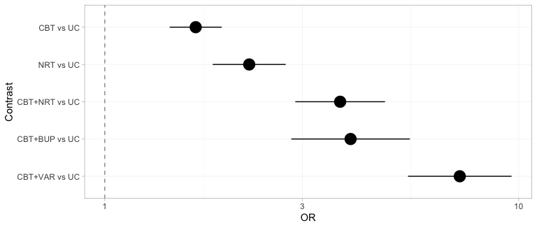
plot of chunk forest-stc
Every contrast against usual care receives a point estimate and an
interval, the three that cross the gap included, and nothing on the plot
distinguishes a contrast the data determine from one they do not. That
is not a defect of forest(); it is a faithful rendering of
what the frequentist bridge believes. The NRT versus
UC row, which sits comfortably clear of the null, is the
one to remember: we return to it once we have the machinery to see what
is wrong with it.
Two routes, two estimands
Before reading any numbers, be clear about what each route is estimating. On a non-collapsible scale this is not a detail:
-
cstc()reports the coefficient on treatment in a regression that also containscpd. That is a conditional log odds ratio, atcpd = 0.3. -
cmaic()reports the coefficient on treatment in a weighted regression with no covariates, fitted to a sample reweighted to look like the target. That is a marginal log odds ratio in the target population. -
cmlnmr()’s is, likecstc(), conditional atx.
These are different numbers, and we can prove it before fitting
anything. The adjusted contrast each method hands to the bridge is
stored on the fitted object, so we can line it up against the truth it
is supposed to be estimating. The true conditional effect is
,
in closed form; the true marginal effect we get by G-computation over
the target population. (Because MAIC’s weights are exponential in
cpd and
cpd,
reweighting a normal covariate returns exactly a normal, so the target
really is
and this Monte Carlo is exact.)
edge <- function(fitobj, study) {
a <- fitobj$bridge$network$agd
a$TE[a$studlab == study]
}
mu_of <- function(s) design$mu[design$study == s]
# the TRUE conditional log-OR: (C_t - C_u)' (beta + Gamma x), in closed form
truth <- function(t1, t2, x) theta(t1, x) - theta(t2, x)
# true MARGINAL log-OR in the target population, by G-computation
mc_marginal <- function(mu, t1, t2, m = 0.3, s = 0.7, M = 2e5) {
x <- rnorm(M, m, s)
p <- function(t) mean(plogis(mu + b_prog * x +
vapply(x, function(z) theta(t, z), numeric(1))))
qlogis(p(t1)) - qlogis(p(t2))
}
knitr::kable(data.frame(
Edge = c("BRIEF-2: CBT vs UC", "COMBO-1: CBT+VAR vs CBT+NRT"),
true_conditional = c(truth("CBT", "UC", 0.3),
truth("CBT+VAR", "CBT+NRT", 0.3)),
cSTC = c(edge(fit_stc, "BRIEF-2"), edge(fit_stc, "COMBO-1")),
true_marginal = c(mc_marginal(mu_of("BRIEF-2"), "CBT", "UC"),
mc_marginal(mu_of("COMBO-1"), "CBT+VAR", "CBT+NRT")),
cMAIC = c(edge(fit_maic, "BRIEF-2"), edge(fit_maic, "COMBO-1"))),
digits = 3, row.names = FALSE,
caption = "Adjusted log odds ratios each method hands to the bridge, against the estimand it targets")| Edge | true_conditional | cSTC | true_marginal | cMAIC |
|---|---|---|---|---|
| BRIEF-2: CBT vs UC | 0.490 | 0.284 | 0.513 | 0.359 |
| COMBO-1: CBT+VAR vs CBT+NRT | 0.675 | 0.632 | 0.579 | 0.620 |
Read that table by rows, and note that the direction of the estimand gap is not fixed:
- On
COMBO-1, where the effect modification is strong, the marginal truth sits well below the conditional one (a gap near 0.10 on the log scale, about 10% on the odds-ratio scale), andcmaic()duly comes out belowcstc(). - On
BRIEF-2the marginal truth sits slightly above the conditional one, andcmaic()duly comes out abovecstc().
Each method tracks its own estimand, gap direction included. The naive summary “the marginal effect is attenuated toward the null” is only half the story: pure non-collapsibility does attenuate, but once a component is effect-modified, the marginal effect also re-weights the conditional effects across the covariate distribution, and that can push either way.
The levels in the table are noisy: with a binary outcome and
700 patients per arm, an edge carries a standard error around 0.15, and
the BRIEF-2 estimates both sit about a standard error below
their targets. The ordering is the signal here, not the third decimal
place. The two methods are estimating different quantities, and
both are estimating them correctly.
Watch what the bridge then does with that difference, though. Each
adjusted IPD edge is pooled with the unadjusted aggregate edges
that sit on the same contrast (BRIEF-3 and
BRIEF-4 on CBT; COMBO-3 on
VAR versus NRT), and those aggregate contrasts
are identical in both routes. The estimand difference therefore survives
into the bridged answer only in proportion to how much of the edge’s
weight the IPD trial carries. In a network with plenty of aggregate
evidence, the two routes can come out close together not because
the estimands agree, but because the adjustment is a minority of the
weight. That is worth knowing before you conclude from a small
STC-MAIC gap that the choice did not matter.
Route 2: one stage, Bayesian
cmlnmr() does the connecting and the adjusting in a
single likelihood. The individual-level model above is fitted directly
to the IPD, and each aggregate arm’s likelihood is that same model
integrated over that study’s own covariate distribution
using quasi-Monte-Carlo points. Nothing is plugged in at a study mean,
which matters because the logit link is nonlinear:
.
We use trt_effects = "random", which adds a study-arm
deviation around the component-implied effect, so the component model is
not forced to fit every trial exactly.
fit <- cmlnmr(ipd, agd,
effect_modifiers = "cpd",
inactive = "UC", family = "binomial",
trt_effects = "random",
chains = 4, iter_warmup = 500, iter_sampling = 500,
n_int = 64, seed = 1, show_exceptions = FALSE)
fit
#> cpaic: component-additive ML-NMR (Bayesian, binomial)
#> Treatment effects: random (noncentered)
#> Effect modifiers: cpd [normal]
#> Component effects below are at the covariate origin (x = 0).
#> For a target population use relative_effects(fit, newdata = ...).
#>
#> component estimate se lower upper
#> BUP 0.377 0.887 -1.533 1.950
#> CBT 0.484 0.121 0.213 0.699
#> NRT 0.553 0.240 0.008 0.954
#> VAR 0.980 0.304 0.282 1.502Note what the print method insists on: those component effects are at the covariate origin, not in any population you care about.
Priors
Every prior is recorded on the fitted object, because with a weakly identified the interaction prior does real work and you should be able to see exactly how much:
knitr::kable(do.call(rbind, lapply(names(fit$priors), function(p) {
s <- fit$priors[[p]]
data.frame(parameter = p, distribution = s$distribution,
location = s$location, scale = s$scale)
})), caption = "The complete prior specification, as passed to Stan")| parameter | distribution | location | scale |
|---|---|---|---|
| intercept | normal | 0 | 2.5 |
| beta | normal | 0 | 2.5 |
| regression | normal | 0 | 1.0 |
| gamma | normal | 0 | 1.0 |
| tau | half-normal | 0 | 1.0 |
The defaults are the Stan prior-choice recommendations: normal(0,
2.5) on component effects and study intercepts, normal(0, 1) on the
component by effect-modifier interactions, and half-normal(0, 1) on the
heterogeneity standard deviation tau. On the log-odds scale
a normal(0, 2.5) is already permissive; a normal(0, 1) on an interaction
says that a one-unit change in cpd (10 cigarettes a day) is
unlikely to swing a component’s log odds ratio by more than about
two.
Stating a prior is not the same as knowing what it did.
plot_prior_posterior() answers that: it draws each
posterior as a histogram and its prior as a line, so a parameter the
data informed is one whose histogram has pulled away from the line
beneath it.
plot_prior_posterior(fit)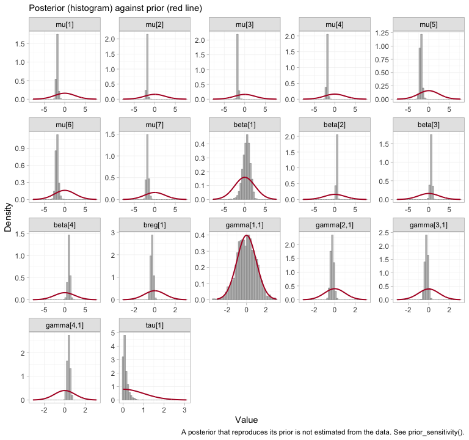
plot of chunk prior-posterior
The study intercepts mu and the component effects
beta are sharp against broad priors, as they should be with
several thousand patients. The components are indexed alphabetically, so
beta[1] is bupropion, and it is conspicuously the widest of
the four: bupropion is carried by a single aggregate trial. The telling
panel, though, is gamma[1,1], the bupropion by
cpd interaction, whose histogram lies underneath its prior
curve almost exactly. That is the visual signature of a parameter the
likelihood does not constrain at all, and we take it up in earnest
below.
Convergence
data.frame(
divergences = fit$diagnostics$divergences,
max_treedepth = fit$diagnostics$max_treedepth,
max_rhat = round(fit$diagnostics$max_rhat, 4),
min_ess_bulk = round(min(fit$fit$summary(c("beta", "gamma", "mu",
"tau"))$ess_bulk, na.rm = TRUE))
)
#> divergences max_treedepth max_rhat min_ess_bulk
#> 1 2 0 1.0168 425The trace plot shows the same thing chain by chain.
plot(fit, type = "trace")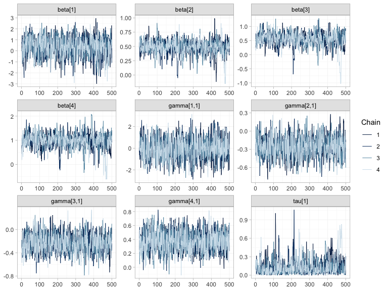
plot of chunk mcmc-trace
plot(fit, type = "rhat")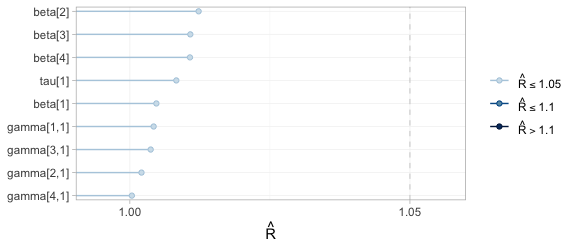
plot of chunk mcmc-rhat
All four chains overlap and are stationary in every panel, and every
sits in the lowest band. Note that the width of a trace is not
a convergence problem but an information statement: beta[1]
and gamma[1,1], bupropion and its interaction, wander over
a range several times wider than the others, because one aggregate
two-arm trial is all the evidence there is about bupropion. This is the
distinction that governs the rest of the vignette: convergence
is a property of the sampler, not of the evidence. A parameter
the data say nothing about will converge perfectly well onto its
prior.
Sampling is not the only numerical approximation here. Each aggregate
arm’s likelihood is an integral of the individual model over that
study’s covariate distribution, evaluated at n_int = 64
quasi-Monte-Carlo points, and plot_integration_error()
traces how far the integral at N points sits from the
integral at all 64.
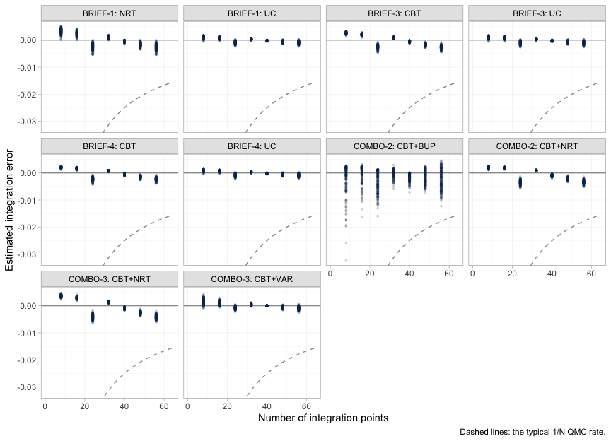
plot of chunk integration-error
In every aggregate arm the error is already well inside the dashed
1/N envelope by twenty points and keeps shrinking toward
sixty-four, so n_int = 64 is ample for this model.
COMBO-2’s bupropion arm is the noisiest of the ten, which
is consistent with it being the arm the model knows least about. Had any
panel still been drifting at the right-hand edge, the remedy would have
been to refit with more integration points, not to reinterpret the
answer.
Estimability: reconnecting is not identifying
cpaic_connectivity() told us the component design has
full column rank, so the frequentist bridge will happily print an
estimate for every cell of the league table. That is exactly the
trap.
Population adjustment is strictly harder than
reconnection, because the estimand
needs the interactions
to be identified too, and an aggregate two-arm trial supplies
one number per contrast: it pins down
at its own covariate mean
and cannot separate
from
.
estimable_effects_at() runs that algebra for a named target
population.
estimable_effects_at(fit, newdata = target, reference = "NRT")
#> Estimability of the population-adjusted relative effects
#> Target population: cpd = 0.3
#> treatment comparator estimable identified_by basis
#> CBT NRT FALSE none not identified
#> CBT+BUP NRT FALSE none not identified
#> CBT+NRT NRT TRUE IPD exact
#> CBT+VAR NRT TRUE IPD exact
#> UC NRT FALSE none not identified
#>
#> Rows marked "not identified" carry no first-order information; a number
#> reported for them would be the prior. relative_effects() returns NA there.Read the identified_by column. CBT+NRT and
CBT+VAR are identified from IPD, meaning
from covariate variation within a trial. The other three are
not identified at all:
-
UCandCBTagainstNRTeach need theNRTcomponent on its own, and onlyBRIEF-1measured that, and did so as an aggregate contrast, at its own mean of 8 cigarettes a day. -
CBT+BUPagainstNRTneeds bupropion-minus-nicotine-replacement, and onlyCOMBO-2measured that, again as an aggregate contrast, at its own mean of 24 a day.
Those two quantities are pinned down at those trials’ covariate means, and 18 cigarettes a day is neither of them. An aggregate two-arm trial gives you one equation; separating a component’s main effect from its interaction takes two.
That table is one target population. plot_estimability()
runs the same algebra across a whole grid of them, which is the only way
to see that estimability is not a fixed property of the network.
plot_estimability(fit, em = "cpd", values = seq(-1, 1, by = 0.25),
reference = "NRT")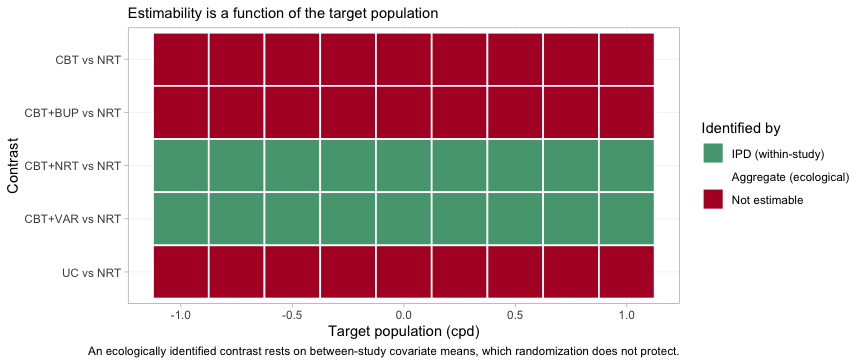
plot of chunk estimability-map
The good news is the two green rows, and they are the rows that
matter: the headline contrast CBT+VAR versus
NRT is identified from within-trial covariate variation at
every target population in the plausible range, from
5-a-day smokers to 25-a-day ones, and so is CBT+NRT versus
NRT. The population-adjusted comparison across the gap is
available wherever a guideline panel might want to stand. The three red
rows are equally uniform, and equally informative: no choice of target
rescues them.
The dependence on the target is real, not a technicality.
BRIEF-1 enrolled 8-a-day smokers; ask for exactly
that population and NRT becomes estimable again.
Note “exactly”: the criterion holds at the trial’s realized covariate
mean, so we read that mean off the aggregate data rather than typing in
the nominal -0.7 we simulated from.
own <- data.frame(cpd = mean(agd$cpd_mean[agd$.study == "BRIEF-1"]))
own
#> cpd
#> 1 -0.7061574
estimable_effects_at(fit, newdata = own, reference = "UC")
#> Estimability of the population-adjusted relative effects
#> Target population: cpd = -0.706
#> treatment comparator estimable identified_by basis
#> CBT UC TRUE IPD exact
#> CBT+BUP UC FALSE none not identified
#> CBT+NRT UC TRUE aggregate first-order screen
#> CBT+VAR UC TRUE aggregate first-order screen
#> NRT UC TRUE aggregate first-order screen
#>
#> Rows marked "first-order screen" are estimable by the linear criterion, which
#> is only a design-based screen for them (aggregate identification, or a
#> survival baseline) and can be optimistic. Check them with prior_sensitivity().
#>
#> Rows marked "not identified" carry no first-order information; a number
#> reported for them would be the prior. relative_effects() returns NA there.That is the whole of what an aggregate two-arm trial can tell you: its own contrast, in its own population. Everything else is extrapolation through , and has to come from somewhere.
Redraw the map on a grid that passes exactly through
BRIEF-1’s own covariate mean, and the point becomes a
picture. This time we take the comparisons against usual care, which is
where the aggregate NRT edge does its work.
plot_estimability(fit, em = "cpd", values = own$cpd + 0.25 * (-1:7))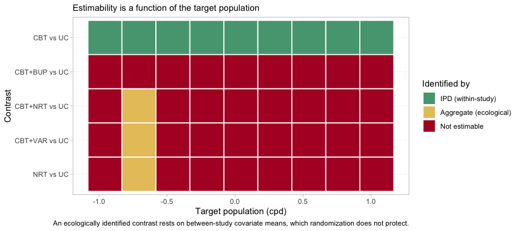
plot of chunk estimability-own-map
One column of the map, and one only, is different: at
BRIEF-1’s own population three further contrasts become
estimable, and they come up yellow, not green. Yellow
is identified_by = "aggregate", which is to say identified
ecologically, from between-study differences in covariate means
rather than from randomized within-study variation. Randomization does
not protect an ecological comparison, and
estimable_effects_at() labels its basis a “first-order
screen” precisely to warn that on a nonlinear link the criterion may be
optimistic there. Estimability is therefore not one property but two:
whether a contrast can be identified at all, and on what kind of
evidence. One step either side of that column, every one of those three
contrasts is red again.
The same algebra reaches the component effects. In the target
population, only CBT is separately identified; even
VAR is not, because varenicline was only ever measured
against nicotine replacement:
component_effects(fit, newdata = target)
#> component estimate se lower upper
#> 1 BUP NA NA NA NA
#> 2 CBT 0.406458 0.1309455 0.122849 0.6495137
#> 3 NRT NA NA NA NA
#> 4 VAR NA NA NA NAforest() renders the same table, and renders the
NAs as what they are.
forest(fit, what = "component", newdata = target)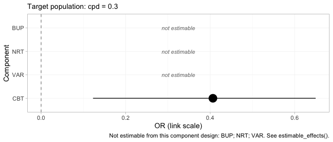
plot of chunk forest-component
Three of the four components are printed as empty rows marked not estimable rather than dropped. Dropping them would leave a plot that looked complete when it was not, which is the single most consequential design decision in the package’s plotting surface.
That looks like a defeat and is not. The headline contrast does not
need VAR alone: CBT+VAR versus
NRT is CBT plus (VAR minus
NRT), and both of those pieces come from IPD.
cpaic returns NA for what it cannot identify and a number
for what it can, which is the behavior you want from a tool that will
otherwise hand you the prior with a straight face (Wigle et al.
2026).
Which edges actually carry the answer
The frequentist bridge has no NAs to return, but the
same linear algebra still governs it, and
plot_edge_influence() exposes it from the other side. A
bridged contrast is a weighted combination of the observed edges, with
weights chosen by the component design rather than by any path through
the network. Those weights are worth looking at before trusting the
contrast.
plot_edge_influence(fit_stc, treatment = "CBT+VAR")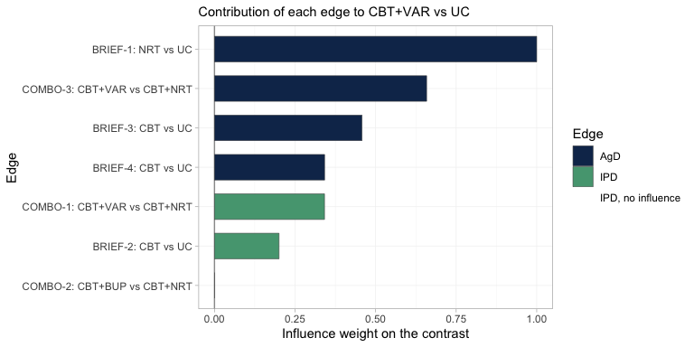
plot of chunk edge-influence
Read the bars from the top. The edge that contributes
most to CBT+VAR versus UC is
BRIEF-1, the aggregate trial in 8-a-day smokers; it carries
more weight than any other edge in the network. It reaches this contrast
because varenicline was only ever measured against nicotine
replacement, so the NRT component has to be supplied from
somewhere, and BRIEF-1 is the only place it exists. Yet
BRIEF-1 is aggregate, so neither cstc() nor
cmaic() can touch it, and it enters the bridge in its own
light-smoking population. Meanwhile the two edges that were
adjusted, COMBO-1 and BRIEF-2, are the green
ones, and between them they carry a minority of the weight.
The last bar is instructive in the opposite direction:
COMBO-2, the bupropion trial, has an influence of exactly
zero. CBT+VAR versus UC contains no bupropion,
so no amount of evidence about bupropion can move it. This is the
diagnostic that the conventional population-adjustment checks cannot
perform: an effective sample size tells you how much of a trial survived
reweighting, but it cannot tell you that reweighting that trial was
incapable of changing your answer in the first place.
Results
Recovered against the truth
relative_effects() needs newdata, because
there is no population-free answer. Here is the target population,
against NRT:
relative_effects(fit, reference = "NRT", newdata = target)
#> Relative effects (OR, back-transformed)
#> Target population: cpd = 0.3
#> treatment comparator estimate se lower upper pr_gt0
#> CBT NRT NA NA NA NA NA
#> CBT+BUP NRT NA NA NA NA NA
#> CBT+NRT NRT 1.514 0.131 1.131 1.915 0.992
#> CBT+VAR NRT 2.820 0.193 1.860 3.956 1.000
#> UC NRT NA NA NA NA NA
#> NA = not uniquely estimable from this component design (see estimable_effects()).
forest(fit, reference = "NRT", newdata = target)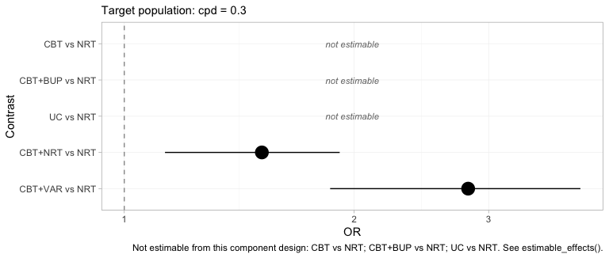
plot of chunk forest-bayes
Two contrasts, an interval each, and three rows that decline to
answer. The headline result is the bottom row: CBT+VAR
versus NRT, a comparison no trial in this network made and
no comparator connects, estimated in a named population with an interval
that reflects how much the data actually say. Compare this plot with the
frequentist forest above, which had five filled rows and no empty ones.
Same network, same target, same question.
And the same network in a lighter-smoking population:
relative_effects(fit, reference = "NRT", newdata = target_light)
#> Relative effects (OR, back-transformed)
#> Target population: cpd = -0.4
#> treatment comparator estimate se lower upper pr_gt0
#> CBT NRT NA NA NA NA NA
#> CBT+BUP NRT NA NA NA NA NA
#> CBT+NRT NRT 1.818 0.137 1.324 2.298 0.997
#> CBT+VAR NRT 2.220 0.231 1.359 3.323 0.997
#> UC NRT NA NA NA NA NA
#> NA = not uniquely estimable from this component design (see estimable_effects()).Now put every method next to the truth we planted. The truth is the
conditional log odds ratio
,
which is what cstc() and cmlnmr() target;
cmaic() targets the marginal effect, so it is expected to
sit closer to the null.
# pull one cell (as plain numbers) out of a relative_effects() table
grab <- function(tab, t1, ref, what = "estimate") {
as.numeric(tab[[what]][tab$treatment == t1 & tab$comparator == ref])
}
re_bayes <- relative_effects(fit, reference = "NRT", newdata = target)
re_stc <- relative_effects(fit_stc, reference = "NRT")
re_maic <- relative_effects(fit_maic, reference = "NRT")
recovery <- do.call(rbind, lapply(c("CBT+NRT", "CBT+VAR"), function(t1) {
data.frame(
Contrast = paste(t1, "vs NRT"),
True_OR = exp(truth(t1, "NRT", 0.3)),
cSTC = grab(re_stc, t1, "NRT"),
cMAIC = grab(re_maic, t1, "NRT"),
`cML-NMR` = grab(re_bayes, t1, "NRT"),
`cML-NMR 95% CrI` = sprintf("(%.2f, %.2f)",
grab(re_bayes, t1, "NRT", "lower"),
grab(re_bayes, t1, "NRT", "upper")),
check.names = FALSE)
}))
knitr::kable(recovery, digits = 2, row.names = FALSE,
caption = "Odds ratios in the target population (cpd = 0.3), against the truth")| Contrast | True_OR | cSTC | cMAIC | cML-NMR | cML-NMR 95% CrI |
|---|---|---|---|---|---|
| CBT+NRT vs NRT | 1.63 | 1.66 | 1.68 | 1.51 | (1.13, 1.91) |
| CBT+VAR vs NRT | 3.21 | 3.23 | 3.25 | 2.82 | (1.86, 3.96) |
Both estimable contrasts are recovered: the point estimates sit near
the planted truth and the credible intervals cover it. The
CBT+VAR row is the one to dwell on, because no trial in
the network measured it.
The bridged cSTC and cMAIC answers come out
close together, for the reason set out above: the estimand gap lives on
the two IPD edges, and the bridge dilutes it with unadjusted aggregate
evidence on the same contrasts. The place to look for the difference is
the edge table, not the league table.
league_table() lays out every pairwise comparison at the
target population. It is worth printing in full, because what it leaves
out is as informative as what it contains.
lg <- league_table(fit, newdata = target)
knitr::kable(lg, caption = paste("League table at cpd = 0.3 (row versus column).",
"Empty cells are not estimable."))| CBT | CBT+BUP | CBT+NRT | CBT+VAR | NRT | UC | |
|---|---|---|---|---|---|---|
| CBT | CBT | 1.51 (1.13, 1.91) | ||||
| CBT+BUP | CBT+BUP | |||||
| CBT+NRT | CBT+NRT | 0.55 (0.41, 0.73) | 1.51 (1.13, 1.91) | |||
| CBT+VAR | 1.86 (1.37, 2.43) | CBT+VAR | 2.82 (1.86, 3.96) | |||
| NRT | 0.67 (0.52, 0.88) | 0.37 (0.25, 0.54) | NRT | |||
| UC | 0.67 (0.52, 0.88) | UC |
Most of it is empty: of the 30 off-diagonal cells, 8 carry a number.
A conventional league table built from this network would have been
full, and every cell in it would have looked equally authoritative. Note
also that the CBT versus UC cell and the
CBT+NRT versus NRT cell agree to the last
digit. That is not a coincidence: under an additive model both contrasts
are the counseling component, reached by two different
routes.
The population dependence is recovered too:
grid <- seq(-0.8, 1.2, by = 0.1)
curve <- do.call(rbind, lapply(grid, function(x) {
re <- relative_effects(fit, reference = "NRT", newdata = data.frame(cpd = x))
r <- re[re$treatment == "CBT+VAR", ]
data.frame(cpd = x, est = r$estimate, lo = r$lower, hi = r$upper,
truth = exp(truth("CBT+VAR", "NRT", x)))
}))
ggplot(curve, aes(15 + 10 * cpd)) +
geom_ribbon(aes(ymin = lo, ymax = hi), alpha = 0.15) +
geom_line(aes(y = est, color = "cML-NMR posterior mean"), linewidth = 1) +
geom_line(aes(y = truth, color = "Truth"), linetype = "dashed",
linewidth = 1) +
geom_hline(yintercept = 1, color = "grey50") +
scale_y_log10() +
scale_color_manual(values = c("cML-NMR posterior mean" = "#2c7fb8",
"Truth" = "#d95f0e")) +
labs(x = "Cigarettes per day in the target population",
y = "Odds ratio, CBT+VAR vs NRT (log scale)", color = NULL,
title = "There is no population-free relative effect",
subtitle = "The contrast no trial measured, recovered across a gap no comparator spans") +
theme_minimal() + theme(legend.position = "top")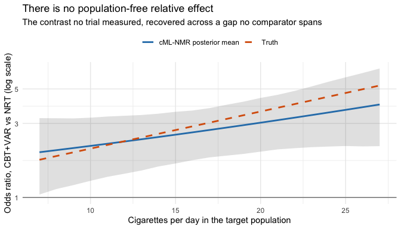
plot of chunk pop-curve
The hierarchy, and the refusal to build one
A guideline panel will ask for a ranking. Wigle et al. (2026)
set out the workflow that answers it responsibly: state the set to be
ranked, determine which of the required relative effects are
estimable, refine the set to the estimable ones or decline to
rank, and only then compute the metrics. cpaic_ranks()
performs those steps and reports what it had to discard.
rk <- cpaic_ranks(fit, newdata = target)
rk
#> Population-adjusted treatment hierarchy
#> Target population: cpd = 0.3
#> element estimate p_best median_rank mean_rank sucra
#> CBT 0.406 0.992 1 1.008 0.992
#> UC 0.000 0.008 2 1.992 0.008
#> Not estimable in this population, so not ranked: CBT+BUP, CBT+NRT, CBT+VAR, NRT
#> Ranking metrics depend on the set ranked; report them with the effects, not instead.
plot(rk)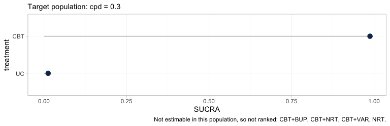
plot of chunk hierarchy
Four of the six treatments are gone. What remains is a two-element
hierarchy, CBT above UC, and the caption names
the four that were dropped. This is not a failure of the ranking code;
it is the estimability result of the previous section reaching the
quantity a guideline panel is most likely to quote. A SUCRA is computed
from a treatment’s relative effect, so a treatment whose relative effect
is not identified can only be ranked by ranking the prior, and no
ranking metric would carry any trace of the substitution.
The rankogram makes the point more sharply still, because it declines
outright. rank_probs() ranks the non-reference treatments,
and once the four non-estimable ones are dropped a single treatment is
left, from which no hierarchy can be formed:
tryCatch(rank_probs(fit, newdata = target),
error = function(e) cat("rank_probs() declined:\n ", conditionMessage(e)))
#> rank_probs() declined:
#> Fewer than two elements are estimable in this target population, so no hierarchy can be formed. See estimable_effects_at().An error is the correct output here. A rankogram of this network at this target population would have been a picture of the prior, drawn with the same confident bars as a picture of the data, and no diagnostic downstream of it would have revealed the difference. Refusing is the whole point of Step 3.
Within the set that can be ranked, the hierarchy is still
population-specific, and plot_rank_curve() traces it across
target populations.
rc <- rank_curve(fit, em = "cpd", values = seq(-1, 1, by = 0.25))
plot_rank_curve(fit, em = "cpd", values = seq(-1, 1, by = 0.25))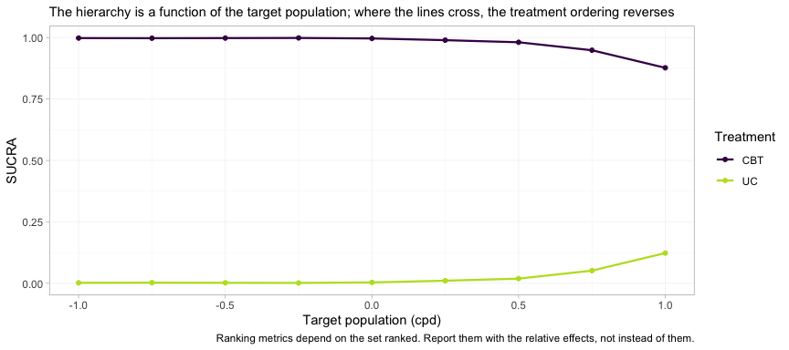
plot of chunk rank-curve
Two cautions in one figure. First, the curves do not cross here, so
counseling beats usual care in every target population; but the margin
erodes steadily, and CBT’s SUCRA falls from 0.997 in the
lightest-smoking population to 0.863 in the heaviest, which is what a
component whose interaction with cpd is negative should do.
In a network with more estimable contrasts the curves generally
do cross, and a hierarchy quoted without a population is then
not merely imprecise but wrong. Second, and more important: the plot
shows two treatments because two is all that could be ranked. It gives
no indication that four others exist. Read a rank curve only after
estimable_effects_at(), never instead of it.
The contrasts the frequentist bridge gets quietly wrong
Now the uncomfortable part, and the reason the estimability check is
not optional. cstc() and cmaic() adjust the
IPD edges to the target. They cannot adjust the
aggregate edges, because there is no IPD for those trials; the aggregate
contrasts enter cnma_bridge() in their own
populations. Nothing warns you. Compare against
UC, where the NRT edge (BRIEF-1,
8-a-day smokers) is doing the work:
re_stc_uc <- relative_effects(fit_stc, reference = "UC")
re_maic_uc <- relative_effects(fit_maic, reference = "UC")
re_bay_uc <- relative_effects(fit, reference = "UC", newdata = target)
cmp <- do.call(rbind, lapply(setdiff(treatments, "UC"), function(t1) {
data.frame(
Contrast = paste(t1, "vs UC"),
True_OR = exp(truth(t1, "UC", 0.3)),
cSTC = grab(re_stc_uc, t1, "UC"),
`cSTC 95% CI` = sprintf("(%.2f, %.2f)",
grab(re_stc_uc, t1, "UC", "lower"),
grab(re_stc_uc, t1, "UC", "upper")),
covers = ifelse(exp(truth(t1, "UC", 0.3)) >= grab(re_stc_uc, t1, "UC", "lower") &
exp(truth(t1, "UC", 0.3)) <= grab(re_stc_uc, t1, "UC", "upper"),
"yes", "NO"),
cMAIC = grab(re_maic_uc, t1, "UC"),
`cML-NMR` = grab(re_bay_uc, t1, "UC"),
check.names = FALSE)
}))
knitr::kable(cmp, digits = 2, row.names = FALSE,
caption = "Odds ratios vs usual care in the target population (cpd = 0.3)")| Contrast | True_OR | cSTC | cSTC 95% CI | covers | cMAIC | cML-NMR |
|---|---|---|---|---|---|---|
| NRT vs UC | 1.46 | 2.23 | (1.82, 2.74) | NO | 2.23 | NA |
| CBT vs UC | 1.63 | 1.66 | (1.43, 1.92) | yes | 1.68 | 1.51 |
| CBT+NRT vs UC | 2.39 | 3.70 | (2.89, 4.75) | NO | 3.75 | NA |
| CBT+VAR vs UC | 4.69 | 7.20 | (5.40, 9.61) | NO | 7.26 | NA |
| CBT+BUP vs UC | 2.60 | 3.92 | (2.82, 5.46) | NO | 3.98 | NA |
The frequentist bridge prints a confident number for every row. For
NRT versus UC it prints roughly the odds ratio
that held in BRIEF-1’s light-smoking population, because
that is the only NRT evidence there is and it entered the
bridge unadjusted. But nicotine replacement loses ground in heavy
smokers
(),
so the truth in the target population is materially smaller.
Every row that inherits that edge inherits the error, and the
covers column shows what that costs: the 95% confidence
interval misses the truth.
Now read the last column. cmlnmr() returns
NA for exactly the rows the two-stage route is getting
wrong, and a number for exactly the row it is getting right.
That correspondence is not a coincidence: it is the same piece of linear
algebra, read once as a warning and once as a silent assumption.
Put the two forests side by side and the contrast is the argument of
this vignette in one image. The frequentist bridge, plotted earlier in
this section’s own comparator, filled all five rows. Here is
cmlnmr() asked the identical question, against the
identical comparator, in the identical target population:
forest(fit, newdata = target)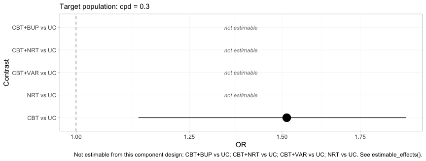
plot of chunk forest-bayes-uc
One row survives, and it is the row the frequentist bridge also got
right. The four blank rows are the four the covers column
just convicted. A plot that refuses to draw four fifths of itself is an
uncomfortable deliverable, and it is the correct one: the alternative is
the plot above it, which is complete, confident, and wrong about
NRT versus UC by a margin its confidence
interval does not admit.
Random effects and model comparison
The random-effects model lets each study-arm deviate from the
component-implied effect; tau measures how much. With five
contrasts and four components there is very little information about
tau, so its posterior leans on the half-normal(0, 1) prior.
Say so, rather than reporting it as a finding.
knitr::kable(fit$fit$summary("tau")[, c("variable", "mean", "sd", "q5", "q95",
"rhat", "ess_bulk")], digits = 3)| variable | mean | sd | q5 | q95 | rhat | ess_bulk |
|---|---|---|---|---|---|---|
| tau[1] | 0.126 | 0.121 | 0.009 | 0.352 | 1.008 | 442.099 |
Compare the random-effects fit against a fixed-effect one by leave-one-out cross-validation (Vehtari et al. 2017) and DIC (Spiegelhalter et al. 2002):
fit_fixed <- cmlnmr(ipd, agd, effect_modifiers = "cpd", inactive = "UC",
family = "binomial", trt_effects = "fixed",
chains = 4, iter_warmup = 500, iter_sampling = 500,
n_int = 64, seed = 1, show_exceptions = FALSE)
loo::loo_compare(list(random = loo::loo(fit), fixed = loo::loo(fit_fixed)))
#> model elpd_diff se_diff p_worse diag_diff diag_elpd
#> fixed 0.0 0.0 NA 6 k_psis > 0.7
#> random -1.7 0.7 0.99 |elpd_diff| < 4 8 k_psis > 0.7
knitr::kable(data.frame(
model = c("random", "fixed"),
DIC = c(dic(fit)$dic, dic(fit_fixed)$dic),
p_eff = c(dic(fit)$p_eff, dic(fit_fixed)$p_eff)),
digits = 1, caption = "Deviance information criterion")| model | DIC | p_eff |
|---|---|---|
| random | 3019.4 | 16.3 |
| fixed | 3017.1 | 14.7 |
The two models sit essentially on top of each other, which is what should happen: the data really were generated by an additive component model with no extra study-arm noise, so the random-effects model is paying for flexibility it does not need. It remains the safer default, because in a real network you do not get to know that.
A single DIC difference reduces the whole data set to one number. The dev-dev plot restores the detail: each point is one data point’s contribution to the posterior mean deviance under each of the two models.
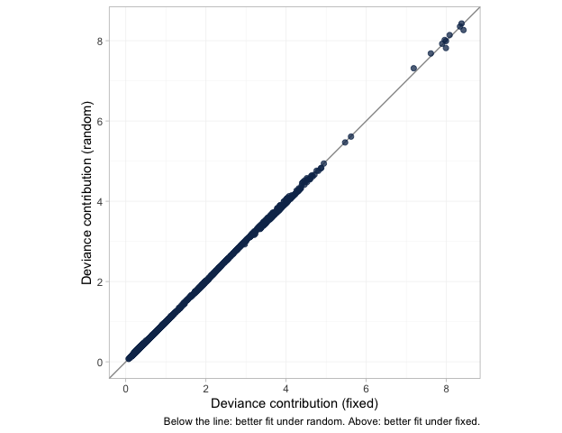
plot of chunk devdev
The points lie along the line of equality with almost no scatter, so the two models are not merely tied on average; they fit essentially every arm and every patient the same way. A DIC tie that came instead from one model fitting some points much better and others much worse would look nothing like this, and would mean something quite different.
The leverage plot asks the complementary question: is any single data point distorting the fit?
plot_leverage(fit)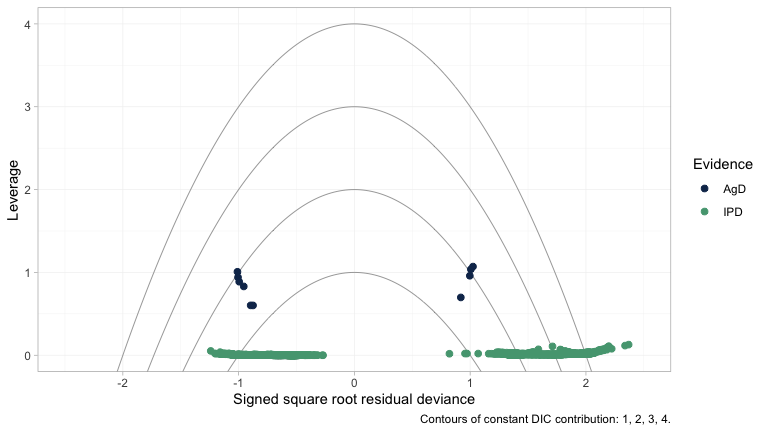
plot of chunk leverage
No point lies outside the DIC = 3 contour, so nothing is
spoiling the fit. The structure worth noticing is the separation between
the two colors. The individual patients (green) sit along leverage zero,
each contributing almost nothing on its own; the aggregate arms (navy)
sit an order of magnitude higher. That is exactly as it should be, and
it is the same fact that the next paragraph reaches from the other
direction.
Two cautions on reading these numbers. First, LOO’s
Pareto-
diagnostic flags several observations. It is right to: each
aggregate arm is a single “observation” that carries an entire trial’s
worth of information, so leaving it out is a large perturbation
and the importance-sampling approximation strains. Treat the LOO
comparison of an IPD-plus-aggregate model as indicative, and read it
alongside DIC. Second, neither criterion can test the assumption that
actually bridges the gap; nor can the Cochran
of the frequentist bridge, which is why additivity_test()
says so out loud:
additivity_test(fit_stc)
#> Additive component model: fit statistics
#> Total lack of fit (Q.additive): Q = 3.101, df = 3, p = 0.376
#> Additivity restrictions (Q.diff): not available; no standard NMA
#> is estimable on a disconnected network.
#> Note: neither statistic tests whether component effects are constant
#> ACROSS sub-networks, which is the assumption that bridges the gap.
#> That assumption is untestable from the data and must be justified
#> clinically.The additive model fits the observed contrasts comfortably here. Do
not read that as reassurance about the bridge: a Q this
size is consistent with an additive model and with the
population mismatch we are about to expose, and it says nothing whatever
about whether the component effects are the same on both sides of the
gap. (In vignette("count-outcomes") the same statistic
comes out large, for a reason that has nothing to do with
additivity.)
Prior sensitivity
The interactions are where the identification problem lives, so look at them alone before perturbing anything.
plot_prior_posterior(fit, prior = "gamma")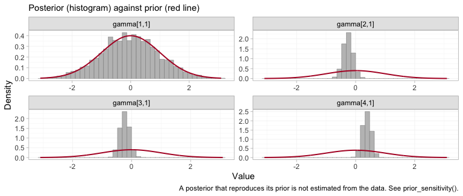
plot of chunk prior-posterior-gamma
Three of the four posteriors have collapsed to a narrow spike well
inside the normal(0, 1) prior: those are the interactions
for CBT, NRT and VAR, the three
components that the two IPD trials touch, and they are estimated from
within-trial covariate variation. The fourth, gamma[1,1],
is bupropion, and its histogram traces the prior curve. The
prior is not a formality for that parameter; it is the entire
posterior. Whatever prior_gamma_scale we had
chosen, the data would have returned it unchanged, and any contrast that
leans on it inherits that property while continuing to look like an
estimate.
Prior movement is the empirical definition of identification: a
contrast that moves when you change a prior it should not depend on was
never data-driven. prior_sensitivity() refits under a
tighter and a looser interaction prior and reports how far each contrast
travels. It deliberately reports movement for non-estimable
contrasts too, bypassing the NA mask, so you can
see the mechanism rather than take it on trust.
ps <- prior_sensitivity(fit, newdata = target, reference = "NRT",
prior = "gamma", tighter = 0.5, looser = 2,
chains = 2, iter_warmup = 250, iter_sampling = 250)
ps
#> cML-NMR prior sensitivity: gamma prior
#> treatment comparator estimate tighter looser move_tighter move_looser max_movement estimable
#> CBT NRT -0.076 -0.087 -0.066 0.012 0.010 0.012 FALSE
#> CBT+BUP NRT 0.294 0.366 0.158 0.073 0.135 0.135 FALSE
#> CBT+NRT NRT 0.406 0.405 0.416 0.001 0.009 0.009 TRUE
#> CBT+VAR NRT 1.018 1.022 1.026 0.004 0.008 0.008 TRUE
#> UC NRT -0.482 -0.493 -0.482 0.010 0.001 0.010 FALSERead the max_movement column against
estimable. Every contrast the criterion calls estimable is
prior-insensitive; every contrast it rejects moves with the prior. That
is what “not identified” means: there is no likelihood ridge
holding the posterior in place, so the prior fills the vacuum, and the
posterior looks perfectly healthy while doing it. The criterion and the
sampler agree, which is the check the package’s own validation script
performs.
What to take away
| Adjusts the population | Bridges the gap | Reports non-identified effects | |
|---|---|---|---|
| Standard NMA | no | no | not at all; they lie outside the model |
| ML-NMR | yes | no | yes, as prior-driven numbers |
cstc() / cmaic() +
cnma_bridge()
|
IPD edges only | yes | yes, silently |
cmlnmr() |
yes, all edges | yes | no: returns NA
|
-
Name the population. With effect modifiers there is
no population-free relative effect.
relative_effects()will not let you pretend otherwise, and the odds ratio forCBT+VARversusNRTgenuinely runs from about 2 to about 5 across plausible target populations. -
Reconnecting is not identifying. The component
design here has full column rank, so an aggregate-data component NMA
identifies every component effect; the population-adjusted
effects are still not all identified, because the interactions are not.
Run
estimable_effects_at()and believe it. -
Pick your estimand deliberately.
cstc()andcmlnmr()give a conditional odds ratio;cmaic()gives a marginal one. On a non-collapsible scale they differ even when all three are right.
Three honest limitations.
-
The bridging assumption is untestable. Reconnecting
through shared components requires component effects and their
interactions with the effect modifiers to be the same in both
sub-networks. There is, by construction, no cross-gap evidence with
which to test that.
additivity_test()tests additivity within what the data can see and cannot touch this; the assumption must be defended clinically (Veroniki et al. 2026). -
The two-stage route leaves the aggregate edges
unadjusted.
cstc()andcmaic()adjust only the edges where you hold IPD. Every aggregate edge enters the bridge in its own trial’s population, and the additive model then propagates that mismatch into any contrast that leans on it, with no warning, and, as thecoverscolumn showed, with an interval that can exclude the truth. Use the two-stage route when the aggregate edges sit close to the target or their components are not effect-modified; otherwise prefercmlnmr(), which integrates each aggregate study over its own covariate distribution and tells you when it cannot answer. -
The bridge mixes estimands, and dilutes the
adjustment. Two related problems, both visible above. First,
the additive component model is a model for conditional,
link-scale effects; marginal log odds ratios do not add across
components, so feeding
cmaic()contrasts intocnma_bridge()mixes currencies on a non-collapsible scale. (The published aggregate contrasts are marginal too, so even thecstc()route pools conditional IPD edges with marginal aggregate ones.) Second, the adjusted IPD edge is only ever a share of the weight on its contrast, so the population adjustment is diluted by however much unadjusted aggregate evidence sits alongside it. Both problems are milder on a collapsible measure; seevignette("count-outcomes"), where the rate ratio is collapsible and the conditional and marginal estimands very nearly coincide.